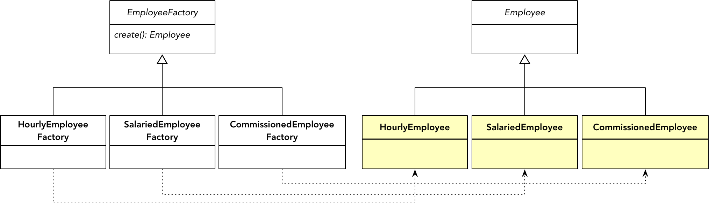

- 001 「战略篇」访谈 DDD 和微服务是什么关系？.md.html
- 002 「战略篇」开篇词：领域驱动设计，重焕青春的设计经典.md.html
- 003 领域驱动设计概览.md.html
- 004 深入分析软件的复杂度.md.html
- 005 控制软件复杂度的原则.md.html
- 006 领域驱动设计对软件复杂度的应对（上）.md.html
- 007 领域驱动设计对软件复杂度的应对（下）.md.html
- 008 软件开发团队的沟通与协作.md.html
- 009 运用领域场景分析提炼领域知识（上）.md.html
- 010 运用领域场景分析提炼领域知识（下）.md.html
- 011 建立统一语言.md.html
- 012 理解限界上下文.md.html
- 013 限界上下文的控制力（上）.md.html
- 014 限界上下文的控制力（下）.md.html
- 015 识别限界上下文（上）.md.html
- 016 识别限界上下文（下）.md.html
- 017 理解上下文映射.md.html
- 018 上下文映射的团队协作模式.md.html
- 019 上下文映射的通信集成模式.md.html
- 020 辨别限界上下文的协作关系（上）.md.html
- 021 辨别限界上下文的协作关系（下）.md.html
- 022 认识分层架构.md.html
- 023 分层架构的演化.md.html
- 024 领域驱动架构的演进.md.html
- 025 案例 层次的职责与协作关系（图文篇）.md.html
- 026 限界上下文与架构.md.html
- 027 限界上下文对架构的影响.md.html
- 028 领域驱动设计的代码模型.md.html
- 029 代码模型的架构决策.md.html
- 030 实践 先启阶段的需求分析.md.html
- 031 实践 先启阶段的领域场景分析（上）.md.html
- 032 实践 先启阶段的领域场景分析（下）.md.html
- 033 实践 识别限界上下文.md.html
- 034 实践 确定限界上下文的协作关系.md.html
- 035 实践 EAS 的整体架构.md.html
- 036 「战术篇」访谈：DDD 能帮开发团队提高设计水平吗？.md.html
- 037 「战术篇」开篇词：领域驱动设计的不确定性.md.html
- 038 什么是模型.md.html
- 039 数据分析模型.md.html
- 040 数据设计模型.md.html
- 041 数据模型与对象模型.md.html
- 042 数据实现模型.md.html
- 043 案例 培训管理系统.md.html
- 044 服务资源模型.md.html
- 045 服务行为模型.md.html
- 046 服务设计模型.md.html
- 047 领域模型驱动设计.md.html
- 048 领域实现模型.md.html
- 049 理解领域模型.md.html
- 050 领域模型与结构范式.md.html
- 051 领域模型与对象范式（上）.md.html
- 052 领域模型与对象范式（中）.md.html
- 053 领域模型与对象范式（下）.md.html
- 054 领域模型与函数范式.md.html
- 055 领域驱动分层架构与对象模型.md.html
- 056 统一语言与领域分析模型.md.html
- 057 精炼领域分析模型.md.html
- 058 彩色 UML 与彩色建模.md.html
- 059 四色建模法.md.html
- 060 案例 订单核心流程的四色建模.md.html
- 061 事件风暴与业务全景探索.md.html
- 062 事件风暴与领域分析建模.md.html
- 063 案例 订单核心流程的事件风暴.md.html
- 064 表达领域设计模型.md.html
- 065 实体.md.html
- 066 值对象.md.html
- 067 对象图与聚合.md.html
- 068 聚合设计原则.md.html
- 069 聚合之间的关系.md.html
- 070 聚合的设计过程.md.html
- 071 案例 培训领域模型的聚合设计.md.html
- 072 领域模型对象的生命周期-工厂.md.html
- 073 领域模型对象的生命周期-资源库.md.html
- 074 领域服务.md.html
- 075 案例 领域设计模型的价值.md.html
- 076 应用服务.md.html
- 077 场景的设计驱动力.md.html
- 078 案例 薪资管理系统的场景驱动设计.md.html
- 079 场景驱动设计与 DCI 模式.md.html
- 080 领域事件.md.html
- 081 发布者—订阅者模式.md.html
- 082 事件溯源模式.md.html
- 083 测试优先的领域实现建模.md.html
- 084 深入理解简单设计.md.html
- 085 案例 薪资管理系统的测试驱动开发（上）.md.html
- 086 案例 薪资管理系统的测试驱动开发（下）.md.html
- 087 对象关系映射（上）.md.html
- 088 对象关系映射（下）.md.html
- 089 领域模型与数据模型.md.html
- 090 领域驱动设计对持久化的影响.md.html
- 091 领域驱动设计体系.md.html
- 092 子领域与限界上下文.md.html
- 093 限界上下文的边界与协作.md.html
- 094 限界上下文之间的分布式通信.md.html
- 095 命令查询职责分离.md.html
- 096 分布式柔性事务.md.html
- 097 设计概念的统一语言.md.html
- 098 模型对象.md.html
- 099 领域驱动设计参考过程模型.md.html
- 100 领域驱动设计的精髓.md.html
- 101 实践 员工上下文的领域建模.md.html
- 102 实践 考勤上下文的领域建模.md.html
- 103 实践 项目上下文的领域建模.md.html
- 104 实践 培训上下文的业务需求.md.html
- 105 实践 培训上下文的领域分析建模.md.html
- 106 实践 培训上下文的领域设计建模.md.html
- 107 实践 培训上下文的领域实现建模.md.html
- 108 实践 EAS 系统的代码模型.md.html
- 109 后记：如何学习领域驱动设计.md.html
- 捐赠
072 领域模型对象的生命周期-工厂
领域模型对象的主力军是实体与值对象，它们又被聚合统一管理起来，形成一个个具有一致生命周期的“命运共同体”自治单元。因此，对领域模型对象的生命周期管理指的就是对聚合生命周期的管理。
所谓“生命周期”，就是聚合对象从创建开始，经历各种不同的状态，直至最终消亡。在软件系统中，生命周期经历的各种状态取决于存储介质的不同，分为两个层次：内存与硬盘，分别对应对象的实例化与数据的持久化。
当今的主流开发语言，大多数都具备垃圾回收的功能。因此，除了少量聚合对象可能因为持有外部资源（通常我们要避免这种情形）需要手动释放内存资源外，在内存这个层次的生命周期管理，主要牵涉到的工作就是创建。一旦创建了聚合的实例，聚合内部各个实体与值对象的状态变更都发生在内存中，直到它因为没有引用而被垃圾回收。
由于计算机没法做到永不宕机，且内存资源相对昂贵，一旦创建好的聚合对象在一段时间内用不上，为避免其丢失，又为了节约内存资源，就需要将其数据持久化到外部存储设备中。无论采用什么样的存储格式与介质，在持久化层次，针对聚合对象的生命周期管理不外乎“增删改查”这四个操作。
工厂
创建是一种“无中生有”的工作，对应于面向对象编程语言，就是类的实例化。由于聚合是一个边界，聚合根作为对外交互的唯一通道，理应由其承担整个聚合的实例化工作。如果要严格控制聚合的生命周期，可以禁止任何外部对象绕开聚合根直接创建其内部的对象。在 Java 语言中，可以为每个聚合建立一个包（package），然后让除聚合根之外的所有类仅定义默认访问修饰符的构造函数。由于一个聚合就是一个包，这样的访问设定可以在一定程度上控制聚合内部对象的创建权限。例如 Question 聚合：
package com.praticeddd.dddclub.question;
public class Question extends Entity<QuestionId> implements AggregateRoot<Question> {
public Question(String title, String description) {...}
}
package com.praticeddd.dddclub.question;
public class Answer {
// 定义为默认访问修饰符，只允许同一个包的类访问
Answer(String... results) {...}
}
许多面向对象语言都支持类通过构造函数创建它自己，这说来有些奇怪，就好像自己扯着自己的头发离开地球表面一般。既然我们已经习以为常，也就罢了，但构造函数差劲的表达能力与脆弱的封装能力，在面对复杂的构造逻辑时，颇为力不从心。遵循“最小知识法则”，我们不能让调用者了解太多创建的逻辑，这会加重调用者的负担，并带来创建代码的四处泛滥。倘若创建的逻辑在未来可能发生变化，就更有必要对这一逻辑进行封装了。领域驱动设计引入工厂（Factory）类承担这一职责。
工厂是设计模式中创建型模式的隐喻。Eric Gamma 等人（称之为GOF）撰写的经典《设计模式》引入了工厂方法模式（Factory Method Pattern）与抽象工厂模式（Abstract Factory Pattern）来满足创建逻辑的封装与扩展。例如，我们要创建 Employee 父聚合，同时还希望调用者保持创建逻辑的开放性，就可以引入工厂方法模式，为 Employee 继承体系建立对应的工厂继承体系：

动态语言且不用说，诸多静态语言通过引入元数据与反射技术支持动态创建类实例，这使得工厂方法模式与抽象工厂模式渐渐被一些元编程技术所代替。由于这两个模式都为工厂类引入了相对复杂的继承体系，且形成了一种所谓的“平行继承体系”，因而在许多创建场景中，已渐渐被另一种简单的工厂模式所替代，即定义静态工厂方法来创建我们想要的产品对象，称之为“静态工厂模式”。它虽然并不在 GOF 23 种设计模式范围之内，却以其简单性获得了许多开发人员的青睐。Joshua Bloch 总结了静态工厂方法的四大优势：
- 静态工厂方法有名称：通过名称可以很好地体现领域逻辑
- 静态工厂方法使得调用者不必每次都创建一个新对象：工厂方法可以对创建逻辑进行封装，可以使用预先构建好的实例，或者引入缓存保证实例的重复利用
- 静态工厂方法可以返回产品类型的任何子类型：如果静态工厂方法创建的聚合对象具有继承体系，就可以根据不同情况返回不同的子类
- 静态工厂方法在创建具有泛型的类型时会更简洁：即使编译器已经做到了类型参数的推导，但工厂方法的定义会更简洁
领域驱动设计要求聚合内所有对象保证一致的生命周期，这往往会导致创建逻辑趋于复杂。为了减少调用者的负担，同时也为了约束生命周期，通常都会引入工厂来创建聚合。除了极少数情况需要引入工厂方法模式或抽象工厂模式之外，主要表现为四种形式：
- 由被依赖聚合担任工厂
- 引入专门的聚合工厂
- 聚合自身担任工厂
- 使用构建者组装聚合
由被依赖聚合担任工厂
领域驱动设计虽然建议引入工厂来创建聚合，但并不必然要求引入专门的工厂类。结合业务场景的需求，可以由一个聚合担任另一个聚合的工厂角色。我们可以将担任工厂角色的聚合称之为“聚合工厂”，被创建的聚合称之为“聚合产品”。
当聚合根作为工厂时，往往是由被依赖的聚合根实体定义工厂实例方法，然后悄悄将对方需要且自已拥有的信息传给被创建的实例，例如 Order 聚合引用了 Customer 聚合，就可以在 Customer 类中定义创建订单的工厂方法：
public class Customer extends Entity<CustomerId> implements AggregateRoot<Customer> {
// 工厂方法是一个实例方法，无需再传入CustomerId
public Order createOrder(ShippingAddress address, Contact contact, Basket basket) {
List<OrderItem> items = transformFrom(basket);
return new Order(this.id, address, contact, items);
}
}
订单领域服务作为调用者，可通过 Customer 创建订单：
public class PlacingOrderService {
private OrderRepository orderRepository;
private CustomerRepository customerRepository;
public void execute(String customerId, ShippingAddress address, Contact contact, Basket basket) {
Customer customer = customerRepository.customerOfId(customerId);
Order order = customer.createOrder(address, contact, basket);
orderRepository.save(order);
}
}
倘若聚合之间并非采用身份标识协作，而是直接引用对象，这种方式的优势就更加明显：
public class Order ...
private Customer customer;
public Order(Customer customer, ShippingAddress address, Contact contact, Basket basket) {}
public class Customer extends Entity<CustomerId> implements AggregateRoot<Customer> {
public Order createOrder(ShippingAddress address, Contact contact, Basket basket) {
List<OrderItem> items = transformFrom(basket);
// 直接将this传递给Order
return new Order(this, address, contact, items);
}
}
然而，聚合根之间直接引用的协作方式是“明令禁止”的，这使得将聚合作为工厂变得不那么诱人。原因有二：
- 倘若聚合工厂与聚合产品分属两个不同的限界上下文，会导致二者之间产生上下游关系，同时还得采用遵奉者模式去重用上游限界上下文的领域模型，如上述案例中 Customer 需要引用 Order。
- 会导致调用者执行多余的聚合查询，如 PlacingOrderService 领域服务需要先通过 CustomerId 获得 Customer，然后再调用其工厂方法创建 Order 实例。由于 Order 实例仅引用了已经存在的 CustomerId，无需客户的其他信息，查询 Customer 的操作就没有必要。
故而，要将一个聚合作为另一个聚合的工厂，仅适用于聚合产品的创建需要用到聚合工厂的“知识”，如前面聚合案例中创建 Training 时，需要判断 Course 的日程信息：
public class Course extends Entity<CourseId> implements AggregateRoot<Course> {
private List<Calendar> calendars = new ArrayList<>();
public Training createFrom(CalendarId calendarId) {
if (notContains(calendarId)) {
throw new TrainingException("Selected calendar is not scheduled for current course.");
}
return new Training(this.id, calendarId);
}
private boolean notContains(CalendarId calendarId) {
return calendars.stream().allMatch(c -> c.id().equals(calendarId));
}
}
引入专门的聚合工厂
专门的聚合工厂可以明确说明它的职责，这时为了限制调用者绕开工厂直接实例化聚合，需要将聚合根实体的构造函数声明为包范围内限制，并将专门的聚合工厂与聚合产品放在同一个包中。例如，Order 聚合的创建：
package com.praticeddd.ecommerce.order;
public class Order...
Order(CustomerId customerId, ShippingAddress address, Contact contact, Basket basket) {}
package com.praticeddd.ecommerce.order;
public class OrderFactory {
public static Order createOrder(CustomerId customerId, ShippingAddress address, Contact contact, Basket basket) {
return new Order(customerId, address, contact, basket);
}
}
OrderFactory 实现了静态工厂方法模式。如前所述，倘若创建的聚合存在多态的继承体系，也可以引入工厂方法模式，甚至抽象工厂模式。当然，从扩展角度讲，也可在获得类型元数据后利用反射来创建。创建方式可以是读取类型的配置文件，也可以遵循“惯例优于配置”原则，按照类命名惯例组装反射需要调用的类名。
倘若引入了专门的工厂类，下订单的领域服务就可以变得更简单一些：
public class PlacingOrderService {
private OrderRepository orderRepository;
public void execute(String customerId, ShippingAddress address, Contact contact, Basket basket) {
Order order = OrderFactory.createOrder(customerId, address, contact, basket);
orderRepository.save(order);
}
}
PlacingOrderService 领域服务并不需要调用 CustomerRepository 获得客户信息，甚至也不需要依赖 Customer 聚合。除了需要为工厂方法传入 customerId 外，唯一的负担就是多定义了一个工厂类而已。
聚合自身担任工厂
要想不承担多定义工厂类的负担，可以让聚合产品自身承担工厂角色。例如，Order 自己创建 Order 聚合的实例，该方法为静态工厂方法：
package com.praticeddd.ecommerce.order;
public class Order...
// 定义私有构造函数
private Order(CustomerId customerId, ShippingAddress address, Contact contact, Basket basket) {}
public static Order createOrder(CustomerId customerId, ShippingAddress address, Contact contact, Basket basket) {
return new Order(customerId, address, contact, basket);
}
}
这其实才是静态工厂模式的正确姿势。它一方面去掉了多余的工厂类，还使得聚合对象的创建变得更加严格。因为工厂方法属于产品自身，就可以将聚合产品的构造函数定义为私有。调用者除了通过公开的工厂方法，别无其他捷径可寻。当聚合作为自身实例的工厂时，其工厂方法不必死板地定义为 createXXX()，例如可以使用 of()、instanceOf() 等方法名。这些方法名与类名的结合可谓水乳交融，如下的调用代码看起来更自然：
Order order = Order.of(customerId, address, contact, basket);
使用构建者组装聚合
聚合作为一个相对复杂的自治单元，在不同的业务场景需要有不同的创建组合。一旦需要多个参数进行组合创建，构造函数或工厂方法的处理方式就会变得很笨拙，它们只能无奈地利用方法重载，不断地定义各种方法去响应各种组合方式。相较而言，构造函数更加笨拙，毕竟它的方法名固定不变，一旦构造参数类型与个数一样，含义却不相同，就会傻眼了，因为没法利用方法重载。
Joshua Bloch 就建议：“遇到多个构造函数参数时要考虑用构建者（Builder）”。构建者亦属于 Eric Gamma 等人总结的 23 种设计模式之一，其设计类图如下所示：
该模式的本意是将复杂对象的构建与类的表示分离，即由 Builder 实现对类组成部分的构建，然后由 Director 组装为整体的类对象。由于 Builder 是一个抽象类，就可以由它的子类实现不同的构建逻辑，完成对构建功能的扩展。然而，自从领域特定语言（Domain Specific Language，DSL）进入领域逻辑开发人员的眼帘之后，一种称为“流畅接口（Fluent Interface）”的编程风格开始流行起来。采用流畅接口编写的 API 可以将长长的一连串代码连贯成一条类似自然语言的句子，这种风格的代码变得更容易阅读。例如，单元测试验证框架 AssertJ 就采用了这样的风格：
assertThat(fellowshipOfTheRing).filteredOn(character -> character.getName().contains("o"))
.containsOnly(aragorn, frodo, legolas, boromir)
.extracting(character -> character.getRace().getName())
.contains("Hobbit", "Elf", "Man");
由于构建者模式中 Builder 的构建方法就是返回构建者自身，因此，该模式也常常被借用于以流畅接口风格来完成对聚合对象的组装。当然，在提供这种流畅接口风格的 API 时，必须保证聚合的必备属性需要事先被组装，不允许给调用者任何机会创建出“不健康”的残缺聚合对象。
在运用构建者模式时，实际上也有两种实现风格。一种风格是单独定义 Builder 类，由它对外提供组合构建聚合对象的 API。单独定义的 Builder 类可以与产品类完全分开，也可以定义为产品类的内部类：
public class Flight extends Entity<FlightId> implements AggregateRoot<Flight> {
private String flightNo;
private Carrier carrier;
private AirportCode departureAirport;
private AirportCode ArrivalAirport;
private Gate boardingGate;
private LocalDate flightDate;
public static class Builder {
// required fields
private final String flightNo;
// optional fields
private Carrier carrier;
private AirportCode departureAirport;
private AirportCode arrivalAirport;
private Gate boardingGate;
private LocalDate flightDate;
public Builder(String flightNo) {
this.flightNo = flightNo;
}
public Builder beCarriedBy(String airlineCode) {
carrier = new Carrier(airlineCode);
return this;
}
public Builder departFrom(String airportCode) {
departureAirport = new Airport(airportCode);
return this;
}
public Builder arriveAt(String airportCode) {
arrivalAirport = new Airport(airportCode);
return this;
}
public Builder boardingOn(String gate) {
gate = new Gate(gate);
return this;
}
public Builder flyingIn(LocalDate flightDate) {
flightDate = flightDate;
return this;
}
public Flight build() {
return new Flight(this);
}
}
private Flight(Builder builder) {
flightNo = builder.flightNo;
carrier = builder.carrier;
departureAirport = builder.departureAirport;
arrivalAirport = builder.arrivalAirport;
boardingGate = builder.boardingGate;
flightDate = builder.filghtDate;
}
}
客户端可以使用如下的流畅接口创建 Flight 聚合：
Flight flight = new Flight.Buider("CA4116")
.beCarriedBy("CA")
.departFrom("PEK")
.arriveAt("CTU")
.boardingOn("C29")
.flyingIn(LocalDate.of(2019, 8, 8))
.build();
构建者的构建方法可以对参数施加约束条件，避免非法值传入。在上述代码中，由于实体属性大多数被定义为值对象，故而构建方法对参数的约束被转移到了值对象的构造函数中。在定义构建方法时，要结合自然语言风格与领域逻辑为方法命名，使得调用代码看起来更像是一次英语对话。
构建者模式的另外一种实现风格，是由被构建的聚合对象担任近乎于 Builder 的角色，然后为该聚合根实体引入一个描述对象（类似四色建模法中的描述对象），由其作为聚合根实体的属性“聚居地”。仍然以 Flight 聚合根实体为例：
public class Flight extends Entity<FlightId> implements AggregateRoot<Flight> {
private String flightNo;
private final FlightDetail flightDetail;
private Flight(String flightNo) {
this.flightNo = flightNo;
flightDetail = new FlightDetail();
}
public static Flight withFlightNo(String flightNo) {
return new Flight(flightNo);
}
public Flight beCarriedBy(String airlineCode) {
flightDetail.carrier = new Carrier(airlineCode);
return this;
}
public Flight departFrom(String airportCode) {
flightDetail.departureAirport = new Airport(airportCode);
return this;
}
public Flight arriveAt(String airportCode) {
flightDetail.arrivalAirport = new Airport(airportCode);
return this;
}
public Flight boardingOn(String gate) {
flightDetail.gate = new Gate(gate);
return this;
}
public Flight flyingIn(LocalDate flightDate) {
flightDetail.flightDate = flightDate;
return this;
}
private static class FlightDetail {
// optional fields
private Carrier carrier;
private AirportCode departureAirport;
private AirportCode arrivalAirport;
private Gate boardingGate;
private LocalDate flightDate;
}
}
相较于第一种风格，它的构建方式更为流畅，因为从调用者角度看，没有显式的构建者类，也没有强制要求在构建最后必须调用 build() 方法：
Flight flight = Flight.withFlightNo("CA4116")
.beCarriedBy("CA")
.departFrom("PEK")
.arriveAt("CTU")
.boardingOn("C29")
.flyingIn(LocalDate.of(2019, 8, 8));
为航班引入的描述对象是 Flight 类的私有类，航班的可选属性全部由该描述类包装，但这种包装对外却是不可见的。若调用者需要描述类包含的属性值，也可以在 Flight 实体中定义对应的 getXXX() 方法，通过返回 FlightDetail 的对应值达到目标。显然，第二种实现风格更接近自然语言的领域表达。
© 2019 - 2023 Liangliang Lee. Powered by gin and hexo-theme-book.